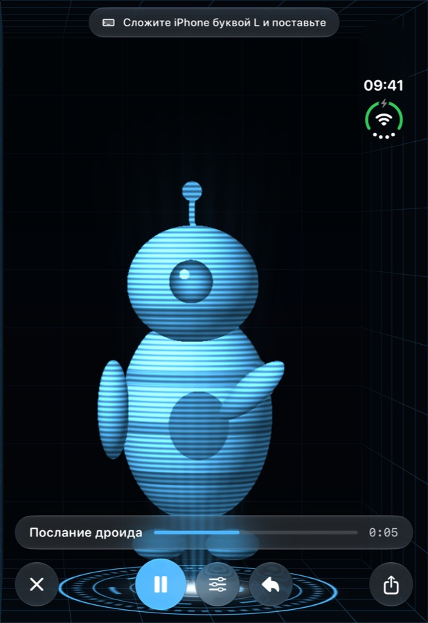

Голограммы, которым можно позвонить.
Сложите iPhone буквой L — и близкие появятся внутри, в 3D, над световым полом. Звоните вживую через FaceTime, снимайте себя или превращайте любое видео в голограмму.

Сложите iPhone буквой L — и близкие появятся внутри, в 3D, над световым полом. Звоните вживую через FaceTime, снимайте себя или превращайте любое видео в голограмму.
